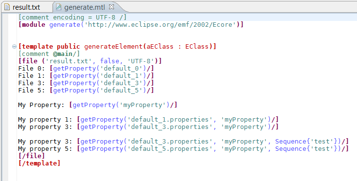
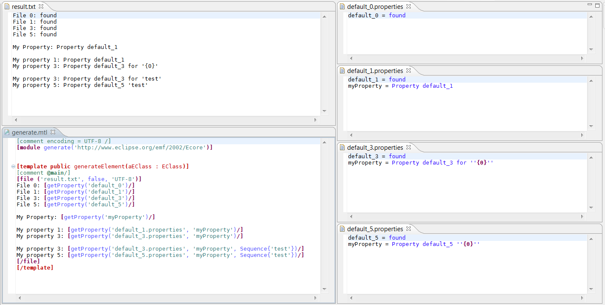
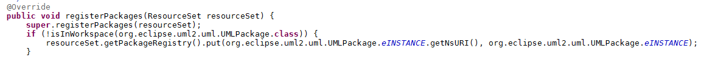
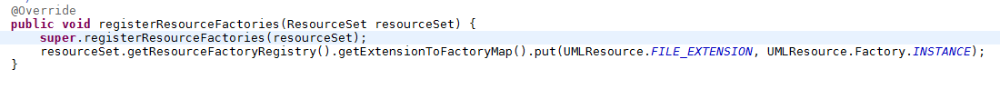

Properties files are standard Java ".properties" files that can be loaded by an Acceleo generator to customize a generation. In order to use a properties file in your generator, you have to reference it in the method "getProperties()" of your Java launcher and then to use the loaded properties in your generator.
In the method "getProperties()", you have to return a collection of the path of the properties files that you want to use. There are four ways to referenced a properties files:
In order to use a properties files located in an Eclipse plugin (all Acceleo generators are Eclipse plugins) you have to make sure that the file is included in the build of your generator, by either placing it in a source folder or by adding it to your build in the build.properties file located at the root of your generator.
Now that you know how to load a properties file, you need to use it in your generator. In order to do that, you can use one of the four following operations:

You can see the result of the generation in the following screenshot.

Acceleo is a code generator that uses EMF model(s) as an input. EMF models are an organized structure of concepts but those concepts needs to be defined in a metamodel. As an example, an UML model manipulates the concepts defined in the UML metamodel (class, property, operation, visibility, etc.). Acceleo modules are defined by using those same concepts as you can see it in the following picture.
When you are launching your generator, Acceleo needs to have the metamodel to understand the model that you are loading. For that, you need to register the root package of the concepts that you are using in the metamodel. By default, Acceleo will register the metamodel defined in the modules but in some complex cases, you may have to customize the package registered.
If you are using the Acceleo Plugin Runner in the launch configuration (right click on a main module then select Run As an Acceleo Application), Acceleo will use EMF and Eclipse to find the package from your metamodel needed by your model. This behavior will work in most cases and it is the recommended behavior to use. Once you are using the Java Application Runner, Acceleo will behave as if we are outside of Eclipse and you will have to register your metamodels manually. To register a metamodel, you need to provide two informations: the uri of the metamodel and the instance of its package.

We have seen in the previous paragraphs how the models used by Acceleo are manipulating concepts defined in a metamodel. For example, an UML model manipulates the concepts defined in the UML metamodel (class, property, operation, visibility, etc.). We have also seen that Acceleo needs to load the metamodel to understand the concepts in the input models and in the generator. We also have to load the model to use it for the generation. The model may be located in a file with any kind of extension serialized in any form (textual DSL, XML, binary, etc.) and Acceleo cannot know how to load the file unless it is using the basic ".ecore" extension for standard EMF based models or unless you are using an extension that another Eclipse plugin has already registered in EMF but Acceleo will not prevent you from loading a file with a custom extension but you will need to register for that a resource factory.
You can see in the following picture, the piece of code necessary to manually register a resource factory to be able to open ".uml" models.
